CS Network Review and Summary
本文最后更新于：2024年1月2日 上午
说明 & 食用方法
按照计网老师发的提纲从书上总结的重点
标题后标有 [IMP] 的为提纲上加粗的, 大概就是重点中的重点了吧
前面的几章还没标
当前进度: 27 / 27 章, 100.0%
计划在 06/22 完成所有内容
已在 06/22 完成
CC-BY-NC-SA 4.0
修订: 2021/06/22 Rev-1
- 说明 & 食用方法
- Part 1 概述
- Part 2 物理层与介质
- Part 3 数据链路层
- Part 4 网络层
- Part 5 传输层
- Part 6 应用层
Part 1 概述
Chapter 1 绪论
数据通信的概念
- 四个关键因素: 传递性 准确性 及时性 抖动性
- 五个组成部分: 报文 发送方 接收方 传输介质 协议
数据流 [IMP]
- 单工: 通信是单方向的
- 半双工: 通信是双向的, 但不能同时收发
- 全双工: 双向通信, 可同时收发
连接类型
- 点到点: 两设备间的专用线路
- 多点连接: 两台以上的设备共用单一链路
物理拓扑结构
- 网状: 任意两设备间都有专用的点到点线路, 台设备需要 条双工链路
- 星型: 每台设备仅拥有一条与中央控制器 (被称为集线器, hub) 相连的点到点线路
- 总线: 用一条较长的线缆作为主干来连接网络上的所有设备, 各设备通过引出线连接到主干
- 环状: 每台设备只与两侧设备有一条专用的点到点连接, 信号以一个方向在环中传输, 每台设备均有中继器 (可再生并转发收到的所有信号)
- 混合型
网络分类 [IMP]
- 局域网 (local area network, LAN): 小范围内的共享, 例如一间办公室或一所学校, 通常仅采用一种传输介质
- 广域网 (wide area network, WAN):
- 交换广域网: 将不同的网络连接起来, 通常包含至少一个网际互联设备 (例如路由器)
- 点到点广域网: 将一台设备连接到广域网, 例如 ISP (Internet service provider, 网络服务提供商) 提供的网络服务
- 城域网 (metropolitian area network, MAN): 规模介于 LAN 和 WAN 之间, 覆盖范围通常是一个乡镇 / 城市
协议和标准 [IMP]
协议三要素
- 语法: 数据的结构或格式, 即数据是以何种顺序表示的
- 语义: 每一个位片段的含义, 即如何理解每一个位置上的位的含义
- 时序: 报文发送的时间和发送的速率
标准
- 事实标准: 未经团体或组织承认但已经在广泛使用中的标准
- 法定标准: 有官方认可的组织制定的标准
Chapter 2 网络模型
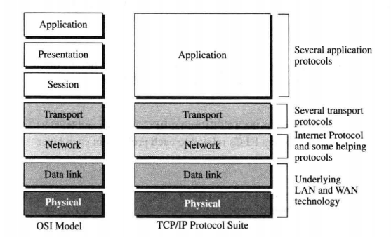
OSI模型 [IMP]
OSI (Open System Interconnection, 开放系统互连) 模型, 不是协议, 也不是 ISO 那个组织
分层的概念与层间连接
- 对等过程: 设备间同一层次的通信过程, 例如物理层 - 物理层, 传输层 - 传输层
- 层间接口: 每层的接口都定义了本层向上下两层提供的服务, 无关层内的具体实现, 便于修改
- 封装: 第 层的分组中的数据部分是第 层的完整分组, 后者被 层视为一个完整的数据单元, 不关心内部结构
各层功能
物理层
负责位从一个节点到另一个节点的传递, 定义了接口和介质的物理特性, 不对数据进行任何改动
功能
- 位的表示 (把0 1转换为对应种类的信号)
- 传输速率 (发送位的速度, 每一位持续的时间)
- 位同步, 线路配置, 物理拓扑结构, 传输方式等等
数据链路层
负责帧从一个节点 (node, 通常也被称作一跳, one hop)到下一个节点 (即下一跳) 的传递, 在同一个网络内部, 将物理层变为可靠的链路
功能
- 成帧: 将来自网络层的位流分割为帧 (frame)
- 物理寻址: 在本地网络范围内, 按照网络设备的物理地址寻找接收者, 例如 MAC 地址
- 流量控制: 协调发送速率, 防止过载
- 差错控制: 检测与重发损坏与丢失的帧, 并防止重复的帧
- 访问控制: 并发访问同一条链路时决定访问的顺序
网络层
负责将各个分组从源地址传送到目的地址 (源端到目的端, 即端到端), 可以跨网络传送, 但不保证报文间的到达顺序 - 所以叫网络层(个人理解)
功能
- 逻辑寻址: 与物理寻址相对, 可以跨网络
- 路由选择: 提供在网络间传递分组的路径
传输层
负责报文的进程到进程传递, 保证报文间的顺序与内容正确并提供给相应的进程
功能
- 服务点寻址: 也叫端口寻址, 把报文送到对应端口的进程中
- 分段和组装: 将进程发来的长报文进行切分并标上序号, 保证数据的顺序正确且不会丢失
- 连接控制: 传输层可以是面向连接或者无连接的, 对前者在数据开始传输前需要建立连接
- 流量控制: 和数据链路层类似, 但是是端口到端口级别的
- 差错控制: 和数据链路层类似, 但是是端口到端口级别的
会话层
负责对话控制 (半双工或者全双工) 与同步 (增加检查点以便快速恢复)
表示层
负责翻译, 压缩与加密数据, 是两个系统间交换信息的语义和语法
应用层
使用户可以访问网络, 提供了服务支持, 例如文件传输, 邮件服务, 虚拟终端等
TCP/IP 协议族 [IMP]
TCP/IP 协议族在 OSI 模型之前开发, 有四个层次, 两者并不严格对应
各层功能
主机到网络层
相当于 OSI 的物理层和数据链路层, TCP/IP 支持所有的标准与专用协议, 没有在这一层进行任何定义
互联网层
相当于 OSI 的网络层, TCP/IP 支持网际协议 (即IP), 后者使用四个支持协议: ARP, RARP, ICMP, IGMP
- IP: 网际协议, 是无连接, 不可靠的尽力传递服务, 无差错检测
- ARP: 逻辑地址 -> 物理地址
- RARP: 物理地址 -> 逻辑地址
- ICMP: 因特网控制报文协议
- IGMP: 因特网组报文协议, 实现一个报文同时发送给一组接收者
传输层
相当于 OSI 的传输层, 有三个协议: TCP ,UDP 和 SCTP (流传输控制协议)
TCP 是有连接的可靠的流传输协议, UDP 无连接, 不可靠
应用层
相当于 OSI 的会话层, 表示层和应用层, 常见的 FTP, HTTP, SMTP 等协议在这一层
地址与寻址 [IMP]
地址有物理地址, 逻辑地址, 端口地址, 专用地址
物理地址
在物理层+数据链路层, 最低级的地址, 在本地网络中有效, 不同种类网络可能不同
逻辑地址
在网络层, 与物理地址无关, 唯一定义了因特网的一台主机
跳到跳时物理地址改变 (因为通过了不同的网络设备的中继), 但是逻辑地址不变 (因为预期的收发者对应的主机不变)
在多数协议中, 逻辑源地址在逻辑目的地址之前, 和物理地址刚好相反
端口地址
在传输层, 端口对应主机上的进程, 显然在跳到跳传递时端口地址也不变
专用地址
在网络层, 例如电子邮件地址, 统一资源定位符 (URL, 例如网址)
由发送计算机转换成对应的端口地址和逻辑地址
Part 2 物理层与介质
最核心的两个公式 - 波长 , 波速 , 周期 , 频率 之间的关系
国际单位制下的量级表示
| 词头 | 单位 | 词头 | 单位 |
|---|---|---|---|
| 毫 | 千 | ||
| 微 | 兆 | ||
| 纳 | 吉 | ||
| 皮 | 太 |
Chapter 3 数据与信号
关于频率, 频域与带宽
通过傅里叶分析, 可以将任何复合信号分解为一系列正弦波
对于周期复合信号, 正弦波的频率是离散的; 对于非周期复合信号, 正弦波的频率是连续的
将分解后得到的正弦波系列表示到 频率 - 振幅 图上, 即得频域图
复合信号包含的频率范围称为带宽, 即信号最高频率与最低频率的差值
数字信号与传输
数字信号是带宽无穷大的复合模拟信号, 每一个电平可以表示多个位
比特率
一秒钟内发送的位数, 以 bps 表示
位长
一个位在传输介质上的持续时间
传输
基带传输
通过通道直接发送数字信号, 不转换为模拟信号, 需要一个下限频率为0的低通通道
宽带宽的低通通道
基本可以保持数字信号的形状, 例如同轴电缆和光纤
有限带宽的低通通道
发送的数字信号需要近似成模拟信号,比特率为 的数字信号传输最小需要的带宽 满足
通过增加更多谐波可以更好地近似
宽带传输
通过调制把数字信号转换成模拟信号传输, 可以使用带通通道 (带宽不从零开始的通道)
传输减损 [IMP]
衰减
能量的损失, 可以使用放大器来补偿
分贝
定义了信号损失或者增益的相对强度, 可以直接加减, 若 为信号在两点处的功率, 则
需要记住的结论:
- 衰减为负, 放大为正
- 或者 衰减说明信号的功率衰减了一半
分贝有时候也被用作以毫瓦计量信号功率的单位, 这时称作 ,
失真
信号改变了形态或形状, 产生在有不同频率成分的复合信号中
噪声
信号在传输过程中被掺杂的非信号成分
信噪比
信号功率与噪声功率的比值, 用 表示
使用分贝单位描述信噪比, 被称为
数据速率限制 [IMP]
取决于三个因素: 有效带宽, 使用的信号电平数, 信道的质量 (噪声有多大)
下面 表示带宽, 表示比特率, 表示使用的信号电平的数量, 表示信噪比
无噪声通道: 奈奎斯特比特率
对无噪声通道, 奈奎斯特比特率公式给出了理论上的最大比特率:
在带宽一定时, 通过增加 可以提高传输速率, 但会让接收方难以区分, 降低可靠性
有噪声通道: 香农容量定理
香农容量定理给出了有噪声通道的通道容量:
公式与 无关, 说明无论使用多少电平都无法获得超过通道容量的数据传输速率
很大时, 有 , 所以通道容量可化简为
注意此时使用的是 SNR dB
总结 [IMP]
香农定理给出数据传输速率的上限, 奈奎斯特公式给出所需的信号电平数
性能
带宽
可以指两个东西: 以频率衡量, 或以 衡量
前者表明通道的频率范围, 后者表明每秒能发送的位数
吞吐量
衡量通过网络发送数据的快慢, 必定小于等于带宽
延迟
第一个位从源端到最后一个位 (即整个报文) 到达目的端的时间, 由四部分组成
传播时间
介质中一个位从源端到目标的时间
传输时间
报文的第一个位与最后一个位离开发送方的时间, 也就是发送方把报文加载到介质上所用的时间
排队时间
网络上每个中间设备在收到本报文后, 处理本报文前的时间 (因为有其他先到的报文等待处理)
处理延迟
接收者处理报文所用的时间 (书上不知道为啥没写这点…)
带宽与延迟的乘积
充满整个链路的位的个数
Chapter 4 数字传输
线路编码
数据元素与信号元素 [IMP]
- 数据元素: 表示信息的最小实体, 即位
- 信号元素: 发送的最小单元
: 每个信号元素承载的数据元素的数量
数据速率与信号速率
- 数据速率 : 每秒发送的数据元素的数量, 单位是 每秒位 (bps), 也称作比特率
- 信号速率 : 每秒发送的信号元素的数量, 单位是 波特 (baud), 也称作调制速率, 波特率
- 情形因子 : 会根据每种情形改变
注意第二个公式和奈奎斯特公式的关系 (可以相互推导, 书 p69 中间 例4.2)
基线偏移
- 基线偏移: 接收方通过计算接收的信号的功率平均值 (即"基线") 来确定高低电平, 连续的 0 或者 1 会影响基线
- 直流成分: 信号中的电平保持一定时间的恒定时, 会产生很低的频率, 近似直流 (DC)
自同步
通过在信号中添加能提示接收方的定时信息来实现双方的时钟同步
线路编码 [IMP]
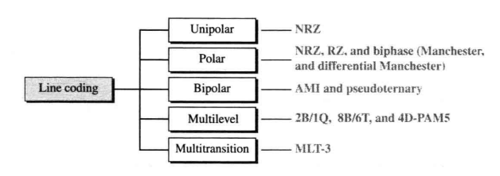
NRZ (不归零编码)
1 为正电平, 0 为零电平, 因为在位中间电平不为零而得名
NRZ-L 与 NRZ-I
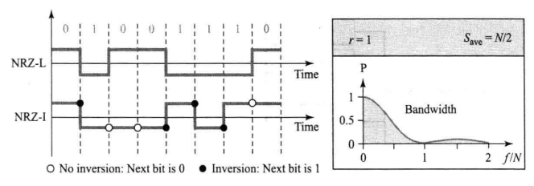
NRZ-L 中电平决定位的值, NRZ-I 中每一个周期的电平和前一个周期相比是否反转决定位的值
- 基线偏移: 均有, 但 NRZ-I 中仅全 0 的序列会导致偏移
- 同步问题: 均有, 但 NRZ-I 中仅全 0 的序列会导致同步问题
- 直流成分: 均有
- 平均信号速率: 均为
因为全 0 时 NRZ-I 的电平不变, 但全 1 时能一直反转
RZ (归零编码)
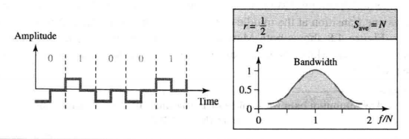
在位中间信号必定归零,
曼彻斯特编码 和 差分曼彻斯特编码
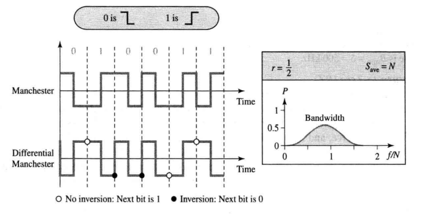
- 双向编码, 也称作两项编码
- 均有自同步信号
- 均无直流成分
- 平均信号速率: 均为
曼彻斯特编码
- RZ 和 NRZ-L 思想组合而成
- 位中间的跳变提供了自同步信号
差分曼彻斯特编码
- RZ 和 NRZ-I 思想组合而成
- 位中间的跳变提供了自同步信号
AMI 和 伪三元编码
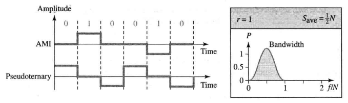
- 双极性编码, 使用三种电平 (正, 负, 零)
- 0 和 1 其中一个电平固定为0, 另一个由交替的正负电平表示
- AMI 没有直流成分 (因为长 0 的电平为零, 长 1 正负交替抵消了)
- AMI 在长 0 序列中存在同步问题, 采用扰动解决
- 平均信号速率:
多电平与多线路编码
按老师给的 pdf 仅要求了解, 看书就行
线路编码 总结
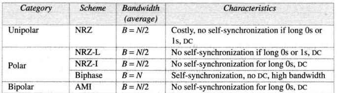
Biphase: 双向, 即曼彻斯特编码 和 差分曼彻斯特编码
块编码
按老师给的 pdf 仅要求了解, 看书就行
扰码
建议看书 😵, p79
脉冲码调制 (PCM)
将模拟信号转为数字信号的最常用方法, 分为三步: 采样 量化 编码
采样
也被称作 脉冲振幅调制 (PAM)
- 采样率 : 每隔 对模拟信号进行采样,
- 奈奎斯特采样定理: 采样速率至少是信号所含最高频率的两倍
量化
- 假定原始信号在 范围中
- 将范围等分为 个区间 (称为量化等级), 每个区间的长度为
- 取每个区间的中点作为每个区间的量化值, 然后将 的量化值分配给这些区间
- 将样本的振幅近似为量化值
建议参考 p83 的例子
量化误差
- 任何一个样本的误差值都小于
- 量化误差对信号 的影响取决于量化级别 或每个样本的位数
编码
为编码后的比特率
Delta 调制
对量化后的信号, 调制器内的比较器把它和一个梯形的基准信号进行比较, 前者大则为 1, 反之为 0.
梯形基准信号来自于调制器自身的输出, 1 为上升, 0 为下降, 变化量即为 , 经过延迟后送入比较器.
Delta 调制同样存在量化误差, 但是远小于 PCM 的误差.
传输模式 [IMP]
串行与并行
- 并行: 利用多个通道, 每次发送多个位
- 串行: 仅需一个通道, 每次仅发送一个位, 可采用同步, 异步或等时传输
同步与异步
- 异步: 将位流组合成组 (通常称为字节), 需要起始位和停止位, 不需要关心时序
- 同步: 将位流组合成帧 (更长, 包含多个字节), 没有时隙, 起始位与停止位
- 等时: 数据以恒定速率到达
Chapter 5 模拟传输
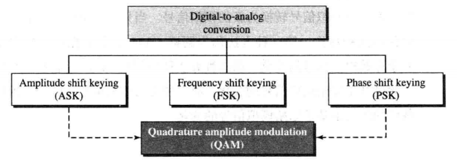
比特率和波特率 [IMP]
定义带宽为
- 比特率: 数据速率,
- 波特率: 信号速率,
幅移键控 (ASK) [IMP]
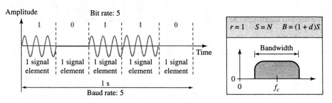
- 仅通过改变信号的振幅来生成信号元素, 不改变频率 相位等
- 若仅有两个振幅, 则称为 BASK (二进制 ASK) 或 OOK (开关键控)
- 带宽: , , 取决于调制和过滤处理
- 载波频率 位于带宽中间
频移键控 (FSK) [IMP]
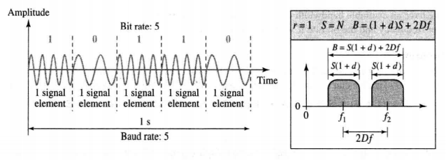
- 使用多种频率, 一种振幅, 若相邻两信号元素间相位一致, 称为"相干", 反之为"非相干"
- 若仅有两个频率, 则称为 BFSK (二进制 FSK)
- 带宽: , 为两个载波频率之差, 最小即为 (此时两个段紧贴)
相移键控 (PSK) [IMP]
二进制PSK (BPSK)
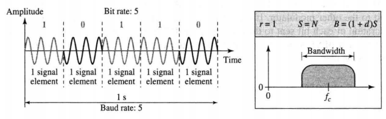
- 仅使用两个不同的相位: 和
- 带宽: , 和 BASK 一样, 但抗噪声能力更强
正交PSK (QPSK)
- 使用两个独立的 BPSK 调制, 一个同相一个正交 (即 )
- 带宽: , 和 BFSK 一样
星座图
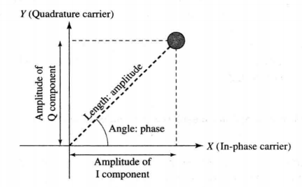
- X 轴为同相成分振幅, Y 轴为正交成分振幅
- 与原点距离为总振幅, 与 X 轴正半轴夹角为相位
正交振幅调制 (QAM) [IMP]
- 结合了 ASK 和 PSK 的理念, 同时利用了振幅和相位的变化
- 最小带宽: 和 ASK, PSK 相同 (忘了的话往前看看)
模拟信号调制
AM, FM, PM, 提纲完全没提, 自己看一下书 p99 ~ p102 就行
Chapter 6 带宽利用
FDM (频分复用) [IMP]
- 在同一介质上使用不同的频率传输信号
- 是模拟复用技术 (直接发送的是模拟信号, 因此数字信号需要先调制)
- 在分离时通过特定频段的滤波器实现通道分离
- 复用的要求
- 链路带宽大于要传输的信号带宽之和
- 载波信号之间的频率差必须能容纳调制信号的带宽 (不发生重叠)
- 载波频率不影响原始的数据频率
TDM (时分复用) [IMP]
- 数字化复用过程
- 每个连接占用链路的一个时间段
同步 TDM
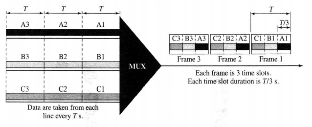
- 每个输入的数据流划分为多个数据单元
- 所有输入的数据单元按照顺序组合成一个帧, 每个数据单元占一个时隙
- 若有 个输入, 一帧的持续时间为 :
- 一帧中有 个时隙
- 每个时隙的持续时间是
- 链路速率是每个连接数据速率的 倍
- 需要在每帧开始的时候添加一些用来同步的帧指示位
- 缺点: 当某个连接无数据发送时会出现空时隙
T-1 帧 [IMP]
- 将 24 路语音信号通过 TDM 组合为 1 路
- 采样: 每秒 8000 次, 每样本 8 位
- 每秒发送 8000 帧, 链路带宽 1.544 Mbps
帧大小: 193位, 其中 1 位用于同步
带宽: 1.544 Mbps
E 线路
T 线路的欧洲版本, 原理与概念相同, 但是容量不同
统计 TDM
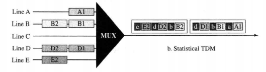
- 循环检测每个输入, 若某输入无数据则不分配时隙 -> 避免了空时隙
- 每个时隙需要添加地址, 个输入需要 位地址
- 没有同步位, 因为统计 TDM 不依赖时间同步来拆分数据
- 链路容量可以小于输入的带宽之和 (因为无数据就不分配时隙了)
WDM (波分复用)
以光线为介质, 通过不同波长的频率实现复用, 和 FDM 类似
扩频
跳频扩频 (FHSS)
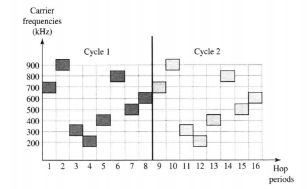
- 通过伪随机噪声在频率表中选择一个频率
- 在一段时间内 (称为跳), 将源信号使用选出的频率进行调制
- 伪随机噪声周期性重复
- 通过多频率FSK可以实现带宽共享
直接序列扩频
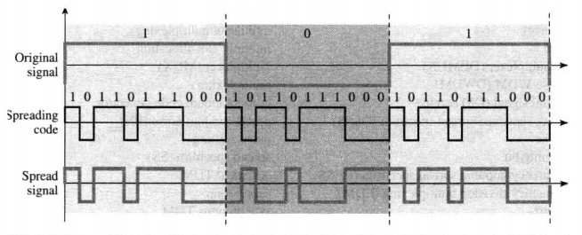
- 使用固定的扩频码对源信号进行调制
- 每个数据位使用扩频码的n位代替
Chapter 7 传输介质
有向介质
- 在设备间提供通路的介质
- 包括双绞线, 同轴电缆, 光缆
双绞线 [IMP]
- 由两条导线缠绕在一起组成
- 通过缠绕可以保证两条线受到的外部影响 (例如噪声) 一致, 故绞合密度越高质量越高
- 分为非屏蔽双绞线 (UTP) 和屏蔽双绞线 (STP), 前者更常用, 后者用金属屏蔽层包裹每一对双绞线
- 最常用的连接器是 RJ45 (就是最常见的那个网线接头, 8根线)
同轴线缆
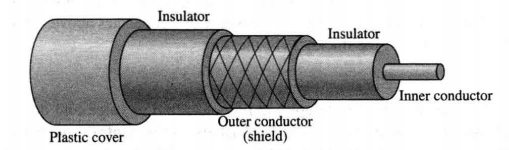
- 仅使用中央的一根实心 (或者是多股绞合的金属丝) 导体, 外面有金属屏蔽层
- 使用 BNC 连接器, 带宽高但衰减大
光纤
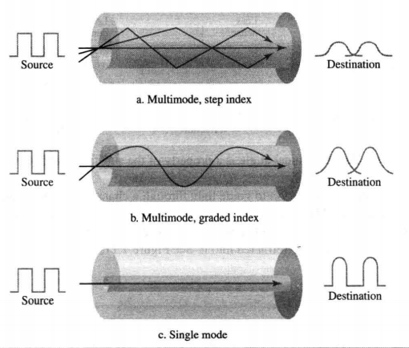
- 通过传导光实现通信, 带宽很大
- 分为单模光纤和多模光纤
- 单模: 光束接近水平, 几乎均沿中间传播
- 多模: 多个光束沿着不同路径, 依赖折射
无线通信
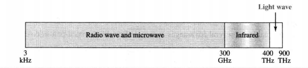
- 无线电波: 3 kHz ~ 1 GHz, 大部分全方向
- 微波: 1 GHz ~ 300 GHz, 指向性强, 使用单向天线 (定向天线)
- 红外: 300 GHz ~ 400 THz, 视线传播, 太阳会干扰
Chapter 8 交换
电路交换 [IMP]
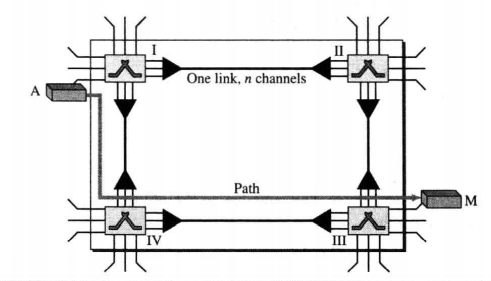
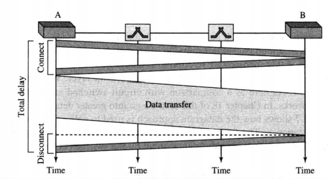
- 在物理层, 由物理链路连接的一组交换机组成, 链路会被复用
- 在通信开始前要预先建立通道, 在整个传输过程中一直保留, 直到最后的拆除阶段
- 数据传输期间无需寻址, 建立时需要端到端的寻址
- 延迟:
- 源计算机请求信息到目标计算机
- 目标计算机确认信息到源计算机
- 数据传输时间
- 拆除信息从一端到另一端的时间
数据报交换 [IMP]
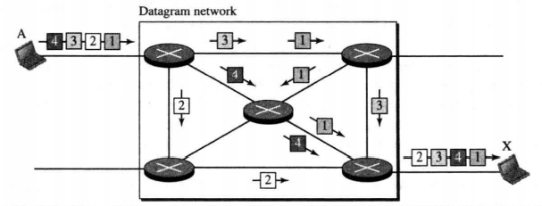
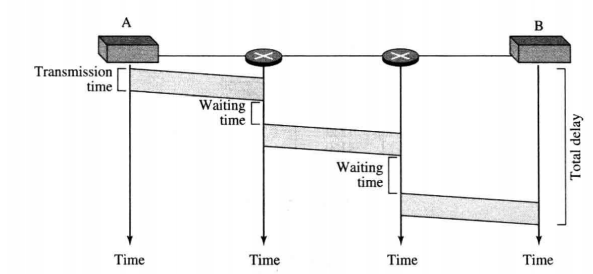
- 在网络层, 是因特网在网络层采用的交换方法
- 不需要建立连接, 也不需要拆除 (也被称作无连接网络, 交换机不保存连接信息), 按需分配资源, 先来先服务
- 各分组单独处理 (即使某个分组是某个多分组传输的一部分), 到达同一目的地的路径可能不一致
- 可能会出现分组丢失或错序, 由上层协议负责修正
- 交换机使用基于目的地址的路由表, 它记载了目的地址和交换机端口的对应关系
- 延迟:
- 各交换机的排队与处理延迟
- 传输时间
虚电路网络 [IMP]
建议看书, p143 ~ p147, 提纲仅作为总结
- 结合了电路交换与数据报交换
- 通常在数据链路层实现, 但未来可能变化
- 需要在数据传输前建立连接
编址
- 全局编址: 源端和目的端的地址, 广域网唯一
- 虚电路标识符: 仅在两交换机间有效, 作为帧前的标识符
- 交换机的表: 不是路由表, 有四列: 输入端口, 输入VCI, 输出端口, 输出VCI
连接建立
设源端为 A, 目的端为 B
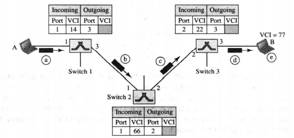
- A 向交换机 1 发送建立连接帧
- 交换机1从端口1接受帧, 分配一个VCI, 通过路由表得到应发往端口3, 但输出VCI留空
- 交换机2~3相同
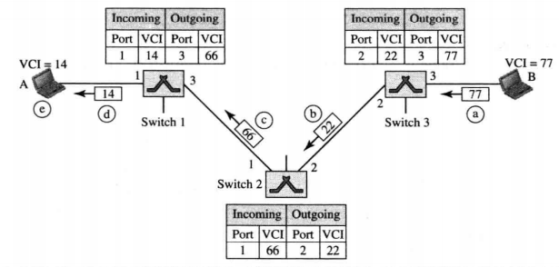
- B 收到建立连接帧, 给从 A 来的帧分配一个VCI, 发给交换机3
- 交换机3接受, 得到表中缺失的VCI项, 发给交换机2
- 交换机1~2相同, A 收到确认, 之后向 B 发送的帧使用交换机1指定的VCI, 连接建立
连接拆除
同样是请求 - 确认两步
延迟
类似数据报交换, 建立 + 传输 + 拆除, 如果预留资源的话没有等待延迟
交换机结构
提纲没有, 看两眼书就行
Chapter 9 使用电话网和有线电视网进行数据传输
信令的概念 [IMP]
信令: 指为使通信网中各种设备协调运作，在设备之间传递的有关控制信息
- 来自维基百科
简单来说, 信令就是用来控制设备的指令信息
- 带内信令: 用和数据通信同一链路传递的信令
- 带外信令: 和数据通信用不同链路传递的信令, 是现代电话网采用的方式
调制与解调
- 调制: 从二进制数据生成带通模拟信号
- 解调: 👆 反过来
- 调制解调器: 调制器 + 解调器, modem
ADSL (非对称数字用户线路)
- 属于 DSL 技术之一
- 下行速率比上行快 (所以是非对称)
- 需要调制解调器
Part 3 数据链路层
Chapter 10 检错与纠错
差错的类型
- 单个位差错: 在给定的数据单元中只有一个位出错
- 突发性差错: 在给定的数据单元中有两位或更多位出错
块编码
把报文划分为块, 每个块有 位, 并增加 个冗余位
总长度: , 位的块称为码字
纠错
- 向前纠错: 接收方利用冗余位推测正确的报文
- 重传: 检测出差错后要求发送方重发
汉明距离
两个相同长度的字中对应位置的位不同的数量, 以 表示
可以采用异或后计算 1 的个数求得
最小汉明距离 [IMP]
所有字两两组合求得的汉明距离的最小值
- 为了检测最多 个差错, 块编码中最小汉明距离一定满足 $d_{min} \ge s+1 $
- 为了纠正最多 个差错, 块编码中最小汉明距离一定满足 $d_{min} \ge 2t+1 $
线性块编码
简单奇偶校验
添加一位, 使得码字中的 1 为偶数 (或奇数)
二维奇偶校验
每一行和每一列均进行一次奇偶校验, 同时角落上的那个按照列进行校验
四位差错可能检测不到
汉明编码
看计组书吧, 这里对计网来说不是重点
循环冗余校验 (CRC)
假设有 位数据, 位码字, 校验码有 位
计算 [IMP]
-
将数据字右侧补 位零
-
对 1 的结果除以除数
- 因为是模 2 的二进制除法, 所以加减都等价于异或运算
- 若最左侧的位为 0, 则商 0, 否则商 1
- 每一步保留后 位, 然后最后一位从被除数中对应位置移下来
-
当没有可移下来的位时, 计算完成, 余数即为结果
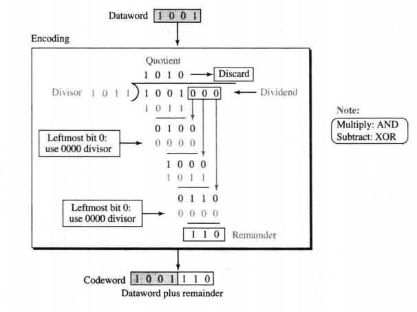
多项式除法
- 每一项的幂次表示在二进制表示法中对应的位置, 若该项系数为 1 则对应位为 1
- 和上面的二进制算法本质一样
- 同样用异或代替加减法, 所以不会有负的系数
差错检测能力
单个位差错
若 生成多项式至少两项 且 的系数为 1, 则所有的单个位差错均可检测
两个独立的单个位差错
若 生成多项式不能整除 , 则所有独立的双差错均可检测
奇数个差错
若 生成多项式包含 , 则可检测所有的奇数个差错
突发性差错
- 所有 的突发性差错均可检测
- 所有 的突发性差错有 的概率被检测
- 所有 的突发性差错有 的概率被检测
表现较好的生成多项式
- 至少两项
- 包含
- 不能整除
- 有因子
校验和
核心是求和取反
位的校验和计算方法
- 报文按照 位划分为字
- 校验和设为 0, 每个字求和
- 对和求反码作为校验和
接收方计算相同, 若得到的校验和为 0 说明校验成功
Chapter 11 数据链路控制
成帧
- 通过添加发送方和接收方地址, 将一条从源端到目的端的报文同其他报文分离开来
- 固定长度成帧: 通过帧的长度本身作为边界, 不需要分隔符
- 可变长度成帧: 需要规定每一帧的起始和结束, 分为面向字符协议和面向位协议
面向字符协议
- 数据表示为固定位数的字符 (比如说 8 位的 ASCII 码)
- 在帧的起始和结束有固定的标记
- 若数据中出现和标记或转义字符相同的字符时, 采用字节填充
- 发送方: 需要在前面添加转义字符
- 接收方: 去掉转义字符, 并将后面的字符作为数据处理
面向位协议
- 数据表示为位流
- 在帧的起始和结束有固定的标记 (
01111110) - 数据中出现与标记相同的模式时, 采用位填充
- 发送方: 在遇到
011111时强制在后面添加一个0, 防止和标记重复 - 接收方: 接受时把添加的
0移走
- 发送方: 在遇到
流量控制与差错控制
- 流量控制: 限制发送方在得到接受方确认前能够发送的数据的数量
- 差错控制: 在任何时候检测到差错时重传出错的帧, 称为自动重复请求, 即 ARQ
协议
无噪声通道
看书 p205 ~ p209, 提纲没提
有噪声通道
务必看书, 务必
停止等待 ARQ [IMP]
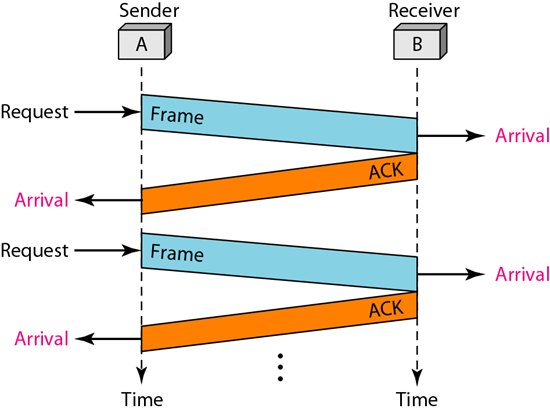
- 发送方每发送一个帧就停止, 启动一个计时器并等待接收方发送 ACK
- 若计时器超时且未收到 ACK, 发送方自动重发
- 接收方对每个正确到达的帧回应 ACK
后退 N 帧 ARQ [IMP]
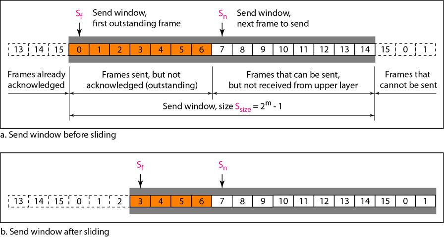
发送方窗口变化
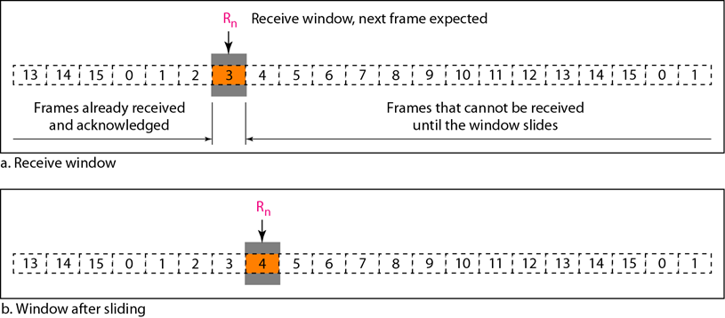
接收方窗口变化
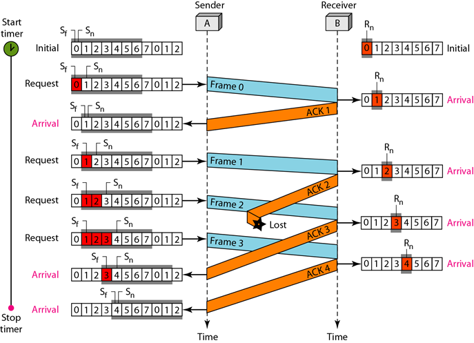
流程图
- 帧的序列号为 位
- 发送窗口大小 , 接收窗口大小
- 发送窗口中的变量
- : 第一个还没有被确认的帧
- : 下一个要发送的帧
- : 窗口大小, 固定为
- 发送方仅对 指向的帧使用定时器 (因为它必定最先到时)
- 接收方仅对顺序和数据正确的帧响应 ACK, 并后移窗口
- 发送方收到 ACK 即可后移窗口 (即增大 ), 故一个 ACK 可以确认多个帧
- 若发送方定时器到时, 则会重发所有未确认的帧 -> 回退 N 帧
选择性重复 ARQ [IMP]
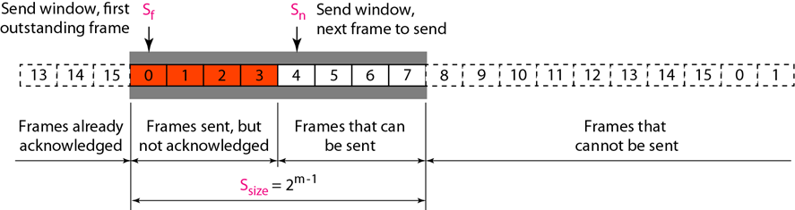
发送方窗口
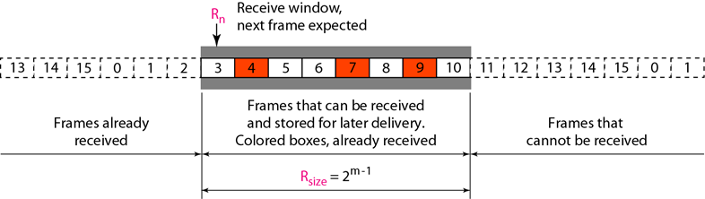
接收方窗口
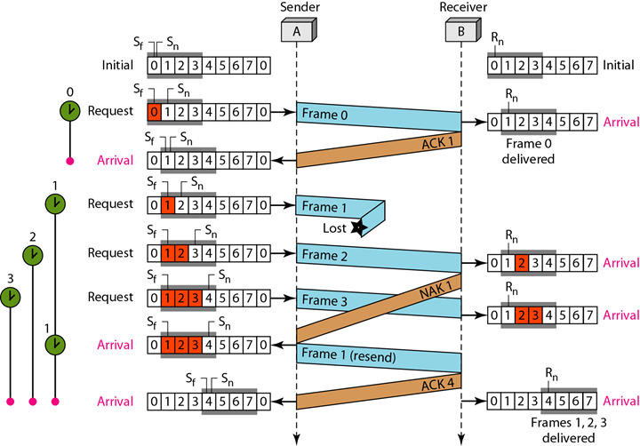
流程图
- 帧的序列号为 位
- 发送窗口, 接收窗口大小均为
- 发送方
- 每个发送的帧均有计时器
- 计时器到时或收到对应的 NAK 时重发对应的帧
- 收到 ACK 时直接右移窗口到对应的位置 (可移动多个)
你看到的这个位置是 源 markdown 文件的第 1000 行 !
- 接收方
- 每次窗口移动前最多发送一次 NAK
- 若收到的帧序号不为 , 则发送 NAK
- 若接收到的帧序号在窗口中, 则保存帧并尝试右移窗口至第一个未收到的帧
HDLC (高级数据链路控制) [IMP]
看书 p226 ~ p230, 书上也是语焉不详…
- 分为主-从类型的 正常相应方式 和地位平等的 异步平衡方式
- 有三种帧: 信息帧 (I-frame), 管理帧 (S-frame) 和无编号帧 (U-frame)
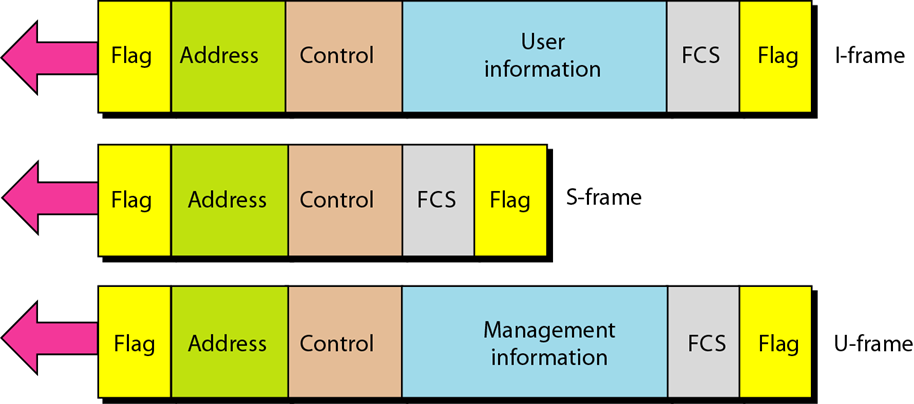
FCS: Frame CheckSum, 帧校验和
Flag: 标记
- 信息帧: 主要运载数据, 但通过捎带也能包含流量控制和差错控制信息
- 管理帧: 仅包含流量控制和差错控制信息
- 无编号帧: 交换会话管理和控制信息, 主要在在控制字段的编码里
点到点协议 (PPP)
- 仅负责点到点的传输
- 没有流量控制, 只有基于 CRC 的简单差错控制
- 面向字节
- 可以提供身份鉴别 (PAP, CHAP 等), 支持多种网络层协议
无关内容: 现在点到点以太网也用 PPP, 称为 PPPoE (PPP over Ethernet)
是不是很眼熟? 宽带连接一般就用这玩意儿
Chapter 12 多路访问
随机访问
ALOHA
纯 ALOHA
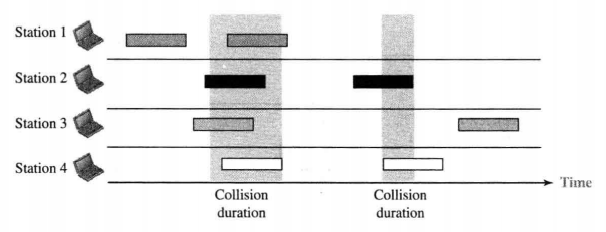
- 各站点之间直接竞争, 有数据直接发送, 不管其他站点
- 每帧都有定时器, 超时未收到接收方的确认帧则等待一段时间 (称为补偿时间 ) 后重发
- 若传输的最长时间为 , 帧平均传输时间为 ,
- 则 , , 取决于实现
- 称为二进制指数退避
- 脆弱时间: 可能发生冲突的时间, 这里是
- 吞吐量: , ,
- 为一个帧传输时间内系统产生的帧的平均数
时隙 ALOHA
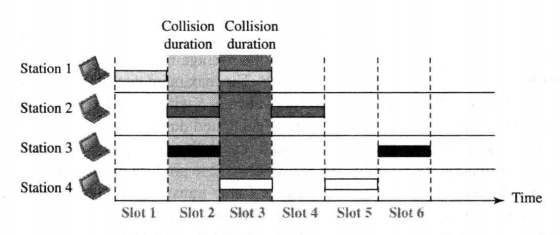
- 将时间按照 分割为时隙, 必须在时隙开始发送帧
- 脆弱时间:
- 吞吐量: , ,
CSMA (载波侦听多路访问) [IMP]
CSMA: Carrier Sense Mutiple Access
- 在发送前先检测介质是否空闲
- 脆弱时间: 传播时间 , 即相邻最远的两站点的传播时间
持续方法
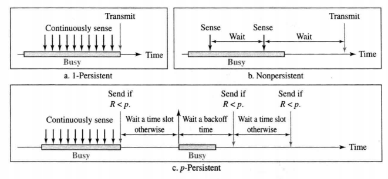
- 定义了站点发现通道繁忙时的检测策略
- 1-持续: 不停地侦听直到介质空闲
- 非持续: 每隔随机时间进行一次侦听
- p-持续: 若通道空闲, 则有 的概率发送数据, 的概率等待一个时隙后再次检测
若空闲则重新进行判定, 否则认为发生冲突, 使用补偿程序
CSMA/CD (带冲突检测的 载波侦听多路访问)
CD: Collision Detect, 冲突检测
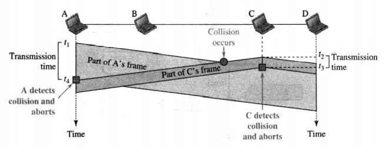
- 发送的时候同时检测是否发生冲突
- 冲突说明至少有两个站点在发送, 会导致介质上的能量水平高于正常值 (检测冲突的方法)
- 若冲突, 则立即放弃传输, 发送干扰信号 (高能短信号, 保证每个站点都能分辨出冲突), 然后应用二进制指数退避
- 最短帧长: 传输时间至少是两倍的(最大)传播时间, 保证即使相邻最远的站点发生冲突, 在传输结束前也能收到对方的帧到达, 帧长即为
CSMA/CA (带冲突避免的 载波侦听多路访问)
CA: Collision Avoid
- 在无线网络等情况下, 冲突不会显著改变介质的能量水平, 故不能检测冲突
- 使用帧间间隔, 竞争窗口和确认三种方法来实现避免冲突
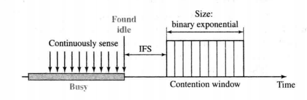
帧间间隔 (IFS)
IFS: InterFrame Space
- 使得远端站点的信号能到达本站点
- 较低的 IFS 说明优先级较高
竞争窗口
- 被划分为时隙, 预备发送的站点各自选择一个时隙作为目标
- 时隙的数量根据补偿策略中的二元指数变化, 每次 IFS 后若仍无空闲则翻倍
- 若站点在等待对应时隙时检测到繁忙, 不会重置计时器, 而是暂停直到空闲, 然后继续等待
确认
即接收方发送的 ACK
受控访问
预约
- 将时间划分为时隙, 每一个时隙内在发送前需要先在预约帧中进行预约
- 对 个子站点, 预约帧中会有 个预约子时隙, 想发送数据的各站点在自己对应的子时隙中进行标记
- 然后进行了预约的各站点按照编号顺序逐个发送数据
轮询
- 一个站点作为主站, 其他作为从站
- 所有的数据都要经过主站传递
- 主站轮流询问各个从站是否要发送 -> 轮询
令牌传递
- 持有令牌的站点可以发送数据
- 各个站点轮流持有令牌, 构成一个逻辑环
Chapter 13 有线局域网：以太网
IEEE 标准
- 将数据链路层划分为 LLC (逻辑链路控制层) 和 MAC子层 (介质访问控制层), 前者在后者上面
- LLC 对所有的IEEE局域网均适用(使MAC子层变得透明), 定义了一个协议数据单元, 提供流量控制和差错控制
- MAC子层为每种相应的局域网协议定义了网络方法和成帧格式
标准以太网的MAC子层
标准以太网: 10Mbps
帧格式 [IMP]
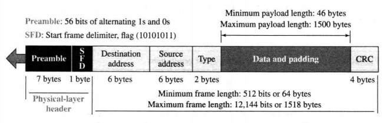
- 由七部分组成: 前导符, 起始帧分界符(SFD), 目的地址, 源地址, 长度/类型, 数据, CRC-32
- 帧的最小长度: 512 位, 对应数据为 46 字节 (不包含前导符和SFD)
- 帧的最大长度: 1518 字节, 对应数据为 1500 字节 (不包含前导符和SFD)
MAC 地址 [IMP]
- 48 位, 即 6 个字节, 采用 12 个十六进制数表示, 两两一组, 冒号分隔
- 单播, 多播与广播地址:
- 第一个字节的最低位若为 0, 则为单播地址; 为 1, 则为多播地址
- 广播地址的每一位都是 1, 是多播的特例
- 发送顺序: 每个字节的低位在前, 逐字节发送
- 例如
47:20, 发送顺序为11100010 00000100
- 例如
CSMA/CD 最短帧长 [IMP]
- 时隙: 一个帧最大的往返时间加上发送干扰信号所需的时间
- 对以太网, 定义为发送一个 512 位的帧(最小帧)所需的时间, 10Mbps 下为 51.2us
- 网络最大长度:
- 理论上最大长度为
- 实际上为 2500m, 由于中继器等延迟
编码与解码
- 所有标准都使用 10Mbps 的数字信号
- 采用曼彻斯特编码
标准以太网的分类
- 10Base5: 总线型 同轴电缆 粗缆
- 10Base2: 总线型 同轴电缆 细缆
- 10Base-T: 星形 UTP, 双绞线在站点和集线器间形成了两条通路, 冲突在集线器中
- 10Base-F: 星形 光纤, 两条
桥接以太网
- 通过网桥连接两个以太网
- 网桥在每个网中作为一个站点
- 网桥作用:
- 提高带宽 (有限的总带宽不变, 但是由于划分共享的站点数少了)
- 划分冲突域
交换式以太网
- 通过二层交换机连接 个以太网, 相当于一个多口网桥
- 带宽仅有站点和交换机之间共享
- 冲突域也划分为了 个
全双工以太网
- 站点和交换机间点对点, 不需要共享, 没有冲突, 也就不需要 CSMA/CD 等
- 使用两条线路, 一收一发
- 为提供流量控制和差错控制, 在 LLC 和 MAC子层 之间增加了新的 MAC控制子层
快速以太网
- 100Mbps
- 不触及 MAC子层
- 取消总线拓扑, 仅保留星型拓扑
- 不需要 CSMA/CD, 但为了兼容保留
- 支持自动协商速率
- 类型:
- 100Base-TX: 两条五类双绞线, MLT-3 编码
- 100Base-FX: 两条双光纤, NRZ-I 编码
- 100Base-T4: 四条三类UTP, 8B/6T 编码
千兆以太网
- 1000Mbps
- 修改了 MAC子层
- 半双工与全双工方法:
- 半双工方法:
- 使用集线器而不是交换机
- 传统方法: 相同的最小帧长 (512位)
- 载波扩展方法: 最小帧长 512 字节, 4096 位
- 帧突发方法: 发送成倍的帧, 类似一个大型帧
- 全双工方法:
- 使用交换机, 不需要 CSMA/CD
- 半双工方法:
- 类型:
- 1000Base-SX: 两条短波光纤
- 1000Base-LX: 两条长波光纤
- 1000Base-CS: 两条铜管线 STP
- 1000Base-T: 四条 UTP
总线型以太网的信道利用率简单分析
看 PPT 吧, ch13 那个, 提纲上没加粗, 请自行把握 🐶
Chapter 14 无线局域网
IEEE 802.11 [IMP]
- 无线局域网规范
- 涵盖了物理层和数据链路层
体系结构
基本服务集 (BSS)
- 无线局域网的基本组成部分
- 分为特别网络和基础设施网络
- 特别网络: 不带 AP (access point, 访问点/接入点)
- 基础设施网络: 有一个 AP, 也称作基础网络
扩展服务集 (ESS)
- 由两个或更多个带有 AP 的 BSS 组成
- 通过分布式系统连接各 AP, 连接方式为任意的 IEEE 局域网, 例如以太网
- 移动站点: 普通的站点; 固定站点: AP
- 同 BSS 内可以直接通信, 但不同 BSS 下不能直接通信
- 移动站点可以同时属于多个 BSS
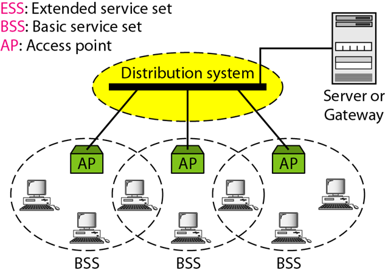
站点类型
- 不迁移: 不动或者仅在一个 BSS 内部移动
- BSS 迁移: 在同一个 ESS 下, 可以在 BSS 间移动
- ESS 迁移: 可以在不同的 ESS 间迁移, 但不保证连续
MAC层 [IMP]
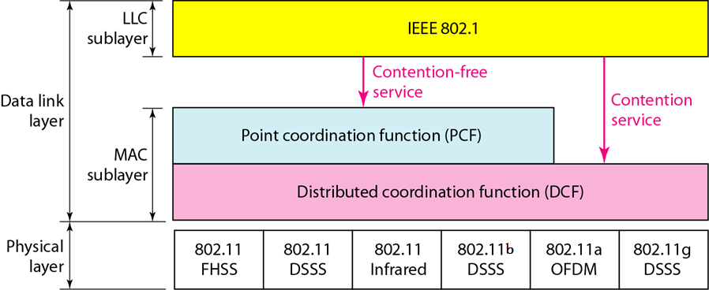
分布式协调功能 (DCF)
DCF: Distributed Coordination Function
- 采用 CSMA/CA 作为访问方式, 原因:
- 否则需要发送时同时侦听, 提高成本
- 由于隐藏站点可能无法检测冲突
- 站点间距导致的信号衰减可能会使两端无法检测到对方的冲突
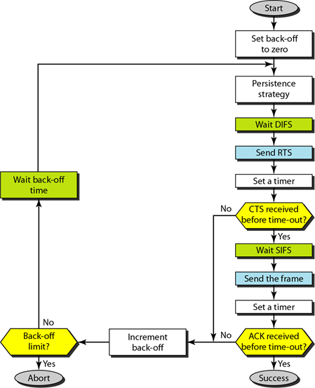
点协调功能 (PCF)
PCF: Point Coordination Function
- 集中式无竞争轮询
- 优先级高于 DCF, 主动权在 AP
- 主要用于对时间敏感数据的传输
帧格式 [IMP]
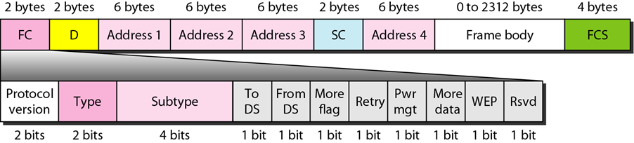
- 9 个字段: 帧控制 (FC), D, 地址 (有四个), 序列号, 帧主题, FCS (帧校验和, CRC-32)
- 三种类型: 管理帧, 控制帧, 数据帧
寻址机制
- 四种情况: 站点间, AP 间, 站点和 AP 之间 (双向)
- 通过 FC 中的 To DS (发往分布式系统, 差不多就是某个 AP) 和 From DS (来自分布式系统, 如前) 确定具体情况, 见下

- 该帧既不是发往一个分布式系统，也不是来自于一个分布式系统，而是从同一个BSS中的一个站点到另外一个站点，不经过DS，需要给原始发送站回送ACK帧
- 该帧来自于分布式系统，从一个AP来，到一个站点去，ACK帧将被回送给AP
- 该帧要发送给一个分布式系统，从一个站点发往AP，ACK帧将被发送到原始站点
- 暗示分布式系统也是无线的，从一个DS的AP发送到另外一个DS的AP；
因为如果其中一个DS是一个有线局域网，则这里就不需要定义地址
隐藏站点 [IMP]
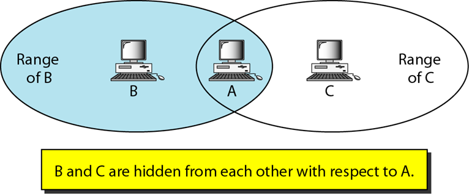
- 若 B -> A, C -> A, 由于 B C 之间相互隐藏, 不知道对方存在, 因此会造成冲突
- 解决方法: 使用握手帧 (RTS 和 CTS, 请求发送和允许发送)
暴露站点 [IMP]

- 若 A -> B, 开始后 C -> D, 由于前者干扰导致后者必须等待 (即使 D 不在 A 范围)
物理层 [IMP]
各协议细节建议看书 p288 ~ p289
- 除红外线外, 均在 ISM 频带: 902~928 MHz, 2.4~4.835 GHz, 5.725~5.850 GHz
- ISM: 工业的, 科学的, 医学的
Chapter 15 连接局域网、主干网和虚拟局域网
连接设备 [IMP]
- 根据设备在网络中工作的层次划分
无源集线器
- 仅仅是一个连接器, 把不同分支物理上连接起来
- 是来自不同站点信号的冲突点
- 在物理层之下, 作为介质的一部分
中继器
- 连接同一个局域网的各个分段
- 工作在物理层
- 通过自己识别信号然后再生, 不会放大噪声
有源集线器
- 工作在在物理层
- 相当于多端口的中继器
- 可以级联, 通常用于星型拓扑结构中
网桥
- 工作在物理层和数据链路层
- 在物理层: 类似中继器, 再生信号
- 在数据链路层: 通过物理地址 (例如 MAC) 转发帧
- 不改变物理地址
- 过滤: 通过查阅自己的表 (可以是手工配置的静态表, 也可以是透明网桥自学习的表) 决定向外转发帧的目的端口
透明网桥
- 通过学习网络中的帧传输方式生成自己的表
- 接收到帧时, 即可记录下该帧的物理地址和接受端口的对应关系
- 转发时, 若无包含目的地址的条目, 则从每个端口转发
- 可能造成帧泛滥
- 在两个 LAN 之间存在多个透明网桥时, 可能会出现循环问题 (同一帧被转发多次)
- 使用生成树算法建立无循环的拓扑结构 (因为树必定无环)
- 网桥和 LAN 都视为节点
- 从网桥到 LAN 的跳数为 1, LAN 到网桥跳数为 0
- 网桥广播自己的 ID, 最小的作为树根
- 计算根网桥到每个网桥与 LAN 的最小成本的路径
- 路径组合即为生成树
- 属于生成树的为转发端口, 不属于的为阻塞端口 (相当于被禁用了)
- 使用生成树算法建立无循环的拓扑结构 (因为树必定无环)
源路由网桥
- 通过发送方指定要经过的每一个网桥
- 并不普及
二层交换机
- 工作在物理层和数据链路层
- 端口可以很多, 让每一个站点都有一个端口 -> 没有通信竞争
- 通过物理地址转发帧
路由器
- 工作在物理层, 数据链路层和网络层
- 通过逻辑地址转发帧
- 使用路由表进行转发决策
三层交换机
- 是路由器, 但"更快更复杂"
- 书中和 路由器 互换使用
网关
- 工作在每一层的计算机
冲突域与广播域 [IMP]
冲突域
- 在物理层, 在同一总线 (或者其他物理网段) 上的站点之和
- 因此, 仅工作在物理层或之下的设备无法划分冲突域, 例如
- 无源集线器, 有源集线器
- 中继器
是物理层面的概念
广播域
- 能接收到同样广播帧的节点的之和, 在数据链路层
- 因此, 仅工作在数据链路层及以下的设备无法划分广播域, 例如
- 无法划分冲突域的设备 👆
- 二层交换机
- 网桥和透明网桥
- 通过划分 VLAN 可以隔离广播域, 所以每一个 VLAN 都是一个广播域
涉及到了帧, 是数据链路层的概念
VLAN (虚拟局域网)
- 将 LAN 划分为逻辑上的网段
- 不同 VLAN 之间不能直接通信, 这就划分了广播域
- 可以基于端口, 物理地址, 逻辑地址, 多播地址等划分 VLAN
想想计网实验
Chapter 16 无线 WAN：移动电话和卫星网络
仅要求了解, 看书即可
Chapter 17 广域网 SONET/SDH
仅要求了解 SONET 的基本概念
Chapter 18 虚电路网络：帧中继和 ATM
帧中继
特征 [IMP]
- 相对于此前的 X.25 虚电路交换网, 具有更快的速率 (1.544Mbps ~ 44.376Mbps)
- 工作在物理层和数据链路层
- 允许突发性数据 (速率不均衡, 可按需分配带宽)
- 最大帧大小 9000 字节, 支持所有局域网的帧
- 仅在数据链路层有错误检测, 无流量与差错控制, 更快
- 帧中继中的 VCI (虚电路标识符) 称作 DLCI
VCI: Virtual Circuit Identifer
DLCI: DataLink Connection Identifer
永久交换虚电路 (PVC)
PVC: Permanent Virtual Circuit
- 由管理员为所有的交换机建立统一设置: 源地址分配一个 VCI, 目的地址分配一个 VCI
- 缺点:
- 花费大, 即使未使用也需一直付费 (因为连接一直存在)
- 只能在一个源地址和一个目的地址间建立连接
交换虚电路 (SVC)
SVC: Switched Virtual Circuit
- 建立短的, 临时的连接
- 需要连接建立和终止阶段
帧结构
建议看书 p344
ATM (异步传输模式)
ATM: Asychoronous Transfer Mode
特征
- 高速互联, 作为网间主干互联的协议
- 面向连接, 提供准确可预测的传输
- 是信元网络, 采用固定大小的信元作为数据交换的基本单位
- 可以避免多路复用时先到达的大型帧对后到达的小型帧的长时间阻塞
- 采用异步的时分复用 (TDM) 实现多路复用
- 时隙大小为一个信元的大小
- 可以存在空时隙
结构 [IMP]
- 用户设备称为端点
- 端点到网络接口: 用户到网络接口, UNI (User-to-Network Interface)
- 交换机之间: 网络到网络接口, NNI (Network-to-Network Interface)
- 传输路径 TP
- Transmission Path
- 是端点与交换机之间, 或两交换机之间的所有物理连接
- 类似于连接两个城市的高速公路的集合
- 虚路径 VP
- Virtual Path
- 两个交换机之间的一条或多条连接的集合
- 类似于两城市间的一条高速公路
- 虚电路 VC
- Virtual Circuit
- 信元网络基于虚电路
- 属于同一报文的所有信元沿着同一条虚电路传输, 同时保持先后次序
- 通过 VPI 和 VCI 来定义一个虚连接, 前者定义特定 VP, 后者定义特定 VC


TP VP VC 间关系
Part 4 网络层
Chapter 19 逻辑寻址 [IMP]
IPv4 地址
- 32 位长
- 在网络中唯一与通用
- 使用二进制标记法和点分十进制标记法
- 二进制标记法: 二进制表示, 八位一个空格
- 点分十进制: 每个字节表示为十进制数, 中间用小数点分割
分类寻址
- 划分为五类: A ~ E
- 通过第一个字节最开始有几个 1 决定分类
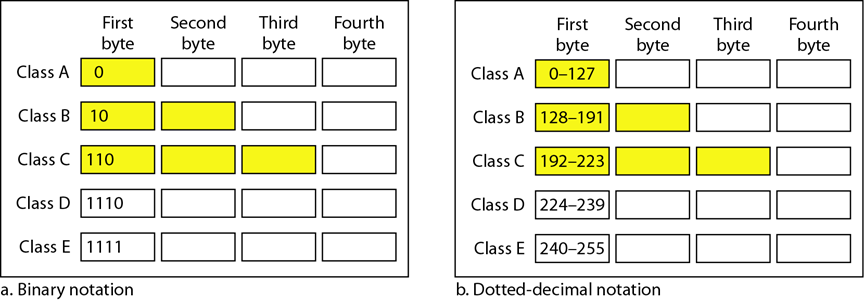
| 类 | 块的个数 | 块长度 | 应用类型 |
|---|---|---|---|
| A | 128 | 16 777 216 | 单播 |
| B | 16 384 | 65 536 | 单播 |
| C | 2 097 152 | 256 | 单播 |
| D | 1 | 268 435 456 | 多播 |
| E | 1 | 268 435 456 | 保留 |
- A B C 类分为网络号和主机号
- 网络号各自占 1 2 3 个字节
- 通过掩码划分, 掩码 32 位
- 子网化: 通过延长掩码中 1 的长度来将一个大的地址块儿划分为包含较少主机的子网
- 超网化: 通过缩短掩码中 1 的长度来将几个小的地址块儿划分为一个大的子网, 无类寻址不需要 (因为你可以直接划分出来大的地址块儿)
无类寻址
- 没有类的概念, 但是仍划分为地址块
- 地址块的限制条件
- 块中地址必须连续
- 块中地址个数必须为 2 的整数次幂
- 块的起始地址必须能被块中地址个数整除
- 通过 CIDR 标记法定义块地址
- x.y.z.t/n
- 其中 /n 为掩码, n 为掩码中 1 的位数 (掩码中的 1 必定连续)
- 起始地址: 通过将块中某个地址的后 32-n 位置为 0 求得 (也就是把地址和掩码进行与运算)
- 最后的地址: 通过将块中某个地址的后 32-n 位置为 1 求得
- 地址个数:
- 网络地址: 代表整个网络, 通常是块的起始地址
层次结构
- 二级层次结构: 没有子网化, 只有网络前缀 (前 n 位) 和定义主机的后 n 位
- 三级层次结构: 有子网化, 通过子网前缀划分子网 -> 增加掩码中 1 长度, 即 n
NAT (网络地址转换)
NAT: Network Address Translation
- 使大量主机共享有限的外部地址
- 在内部网络分配专用地址, 对外表现为公网地址
- 在向外网发送时把分组的源地址替换为公网地址, 同时在表中添加专用地址-公网地址的条目
- 接受时通过查表确定对应关系
- 可以采用 IP 地址池来对外同时使用多个公网地址
- 可以在转换表中同时采用使用 IP 地址和端口号来实现内外网多对多的转换
- 表中有五列: 专用地址与端口, 外部地址与端口, 传输协议
- 外部的响应报文通过目的地址和目的端口号(和内网中的发起方使用的临时端口相同)确定内网的接收者
- 临时端口号必须唯一
IPv6 地址
- 16 个字节, 128 位
- 采用十六进制冒号标记法
- 每两个字节一部分, 作为四个十六进制数字
- 每部分之间用冒号分隔
- 可以缩短, 需要满足
- 在两个冒号之间 (所以开头和结尾不能缩短)
- 高位的连续的 0 可以缩短
- 若有连续的几个部分仅包含 0, 则可以把这些 0 用两个冒号代替, 但这种缩短只能用一次
- 例如 FDEC : 0074 : 0000 : 0000 : 0000 : B0FF : 0000 : FFF0
- 缩短: FDEC : 74 : 0 : 0 : 0 : B0FF : 0 : FFF0 (去掉了每个部分的前导 0)
- 更缩短: FDEC : 74 :: B0FF : 0 : FFF0 (把连续的 0 合并)
- 缩短地址的恢复
- 将未缩短的部分对齐
- 将 0 插入
Chapter 20 IP协议
网际互连
- 因特网中的网络层交换采用数据包分组交换
- 是无连接的
- 各分组之间没有联系
- 同一报文的各分组可能采用不同路径
IPv4
数据报格式 [IMP]
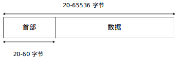

HLEN: Header Length, 头部长度
- 版本: 定义 IPv4 版本, 若错误则直接丢弃数据报
- 头部长度: 数据报头部的总长度除以4, 对不含选项的头部, 长度为 20 字节, 值为 5
- 服务: 有两种解释方法, 服务类型和差分服务
- 服务类型
- 前三位指定优先级, 在遇到拥塞时先丢弃低优先级的 (未使用)
- 后四位称为 TOS 位, 前三位分别指定低延迟, 最大化吞吐量和最高可靠性, 最后一位没用
- 差分服务
- 后两位不用
- 前六位组成码点子字段
- 最右侧三位为 0, 则前三位和"服务类型"的解释方式相同
- 否则, 定义 64 种服务 (然而具体的分配方式还没定下来, 看看就行)
- 服务类型
- 总长度: 以字节计算的数据报总长度, 包括头部长度和数据长度
- 可以靠这个把数据报和填充分开, 比如以太网最低要求 46 字节的帧
- 标识, 标记和分段偏移: 和分段有关, 见后面
- 生存时间: 能经过路由器转发的数量, 每个路由器收到后先减一, 为 0 时直接丢弃, 并回送一个错误信息
- 协议: 指定了该数据报使用的高层协议, 例如 TCP UDP ICMP 等
- 校验和: 仅计算头部 (数据部分的校验和由高层协议负责)
- 将头部按照 16 位划分
- 对这些数求和, 正常进位, 同时最高位的进位加到最低位上
- 对结果取反码
- 选项: 可选的选项, 看书 p393
MTU (最大传输单元) 与分段
MTU: Maximum Transmission Unit
- 每个数据链路层协议都有自己的帧格式, 也就定义了该协议下最大的数据长度
- 为了让 IPv4 协议与物理网络无关, IPv4 数据报的最大长度为 65535 字节, 是常见的网络中最大的 MTU 值
- 分段在传输层进行
- 数据报在到达最终目的端前, 可能被多次分段
- 标识: 一个序列号, 定义了特定的从源端发出的数据报, 分段不改变标识
- 标记: 3 位字段
- 第一位: 保留不用
- 第二位: 不分段位 (DF, Don’t Fragment), 为 1 时强制禁止分段, 若超过 MTU 会导致无法发送并回送错误信息
- 第三位: 多分段位, 若为 1 表明这不是最后的分段, 为 0 表示是最后或唯一的分段
- 分段偏移: 表示了该分段的第一个字节在整个数据报中的相对位置, 单位是 8 字节, 也就是除以 8
- 所以分段时每个分段的长度必须满足使每个分段的第一个字节的位置为 8 的整数倍
- 重组方法:
- 第一个分段的分段偏移为 0
- 第一个分段的长度除以 8 得到第二个分段的偏移值
- 第一二个分段的长度之和除以 8 得到第三个分段的偏移值
- 重复以上过程, 最后一个分段的 多分段位 为 0
IPv6
数据报格式 [IMP]
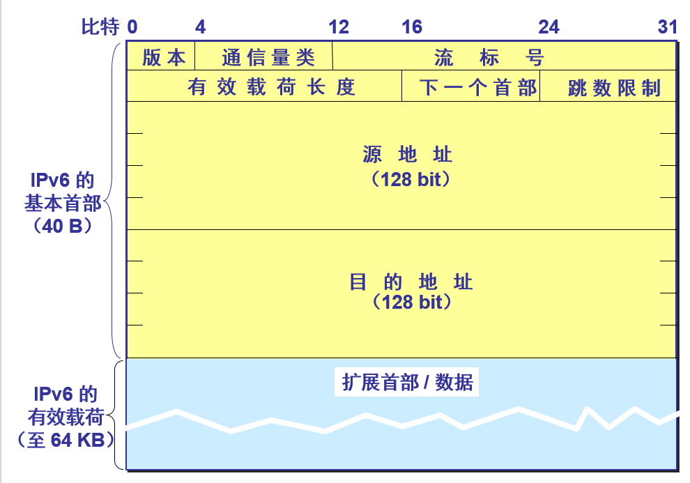
- 基本头部固定 40 字节, 选项等放在扩展头部
- 版本: IPv6 的版本号, 为 6
- 优先级: 发生拥塞时决定丢弃顺序, 分为可进行拥塞控制的通信量和不可进行…
- 可进行拥塞控制: 分 0~7, 0 最低, 不同服务类型的优先级不同
- 不可进行拥塞控制: 尚未指定, 8~15, 8 为具有最大冗余度的数据 (就是丢一点儿影响也没那么大的)
- 流标号: 标识了一个数据报系列, 它们来源于同一个地址, 去往同一个地址, 使用同样的服务
- 有效载荷长度: 定义存在冲突, 见下面
- 下一个头部: 下一个可选的扩展头部的位置, 或者是上层协议 (比如 UDP/TCP) 的头部
- 跳数限制: 类似于 IPv4 中的 TTL (生存时间)
- 源地址: 发送方的地址
- 目的地址: 若使用了源路由选择, 则为下一个路由器的地址, 否则就是最终目的地的地址
IPv4 IPv6 头部对比
- IPv6 取消了头部长度字段, 因为 v6 头部固定 40 字节
- IPv6 取消了服务类型, 用优先级+流标号代替功能
- IPv6 取消了总长度字段, 使用有效载荷长度代替 这点有点小冲突, 详情看下面
- IPv6 基本头部中取消了标识, 标记和分组偏移, 放在了扩展头部里
- IPv6 将 TTL 称为跳数限制
- 协议字段被替换成下一个头部字段
- 头部不再包含校验和
- IPv4 中的选项移动到了 IPv6 的扩展头部中
关于 IPv6 的有效载荷长度和 IPv4 的总长度
按照书上说法, IPv6 的有效载荷长度为 “包括基本头部在内的IP数据报的总长度”, 这个说法其实和 IPv4 的总长度定义一样
但是老师的 PPT 上和我查的 Wiki 上都认为 有效载荷长度为除基本头部之外的数据报长度
等待查证 0.0
IPv4 IPv6 混合
- 双协议栈: 同时支持 IPv4 和 v6
- 隧道技术
- v6 -> v4 -> v6
- 通过在 v6 分组前添加一个 v4 的头部来让分组通过仅支持 v4 的区域
- 头部转换
- v6 -> v4
- 由于接收方仅支持 v4, 但发送方使用 v6, 因此在最后转发给接收方前把 v6 的头部转换为 v4 的头部
Chapter 21 地址映射、差错报告和多播
ARP
ARP: Address Resolution Protocol, 地址解析协议
概念 [IMP]
- 逻辑地址到物理地址
- 直接封装到数据链路层的帧中
- ARP 查询是广播, ARP 回答是单播 (持有对应逻辑地址的节点返回自己的物理地址)
- 支持所有的物理地址与逻辑地址类型
分组格式
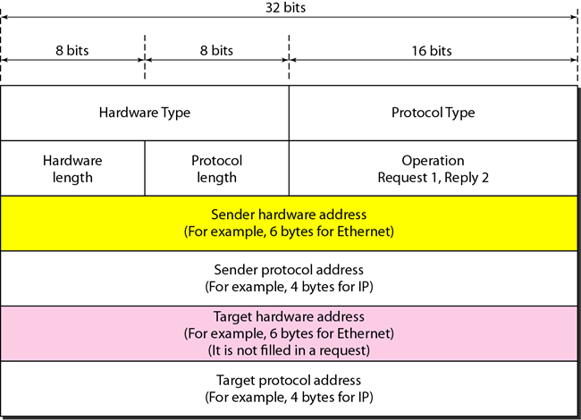
- 硬件类型: 指定了物理网络的类型, 比如以太网
- 协议类型: 指定了使用逻辑地址的高层协议的类型, 比如 IPv4
- 两个长度: 字节为单位, 按需求填, 比如以太网物理地址长度是 6, IPv4 协议长度 (就是逻辑地址长度) 为 4
- 操作: 分为 ARP 请求和 ARP 回答
- 四个地址: 按需填
- 注意, 在 ARP 请求中, 目标硬件地址填 0, 因为这时还不知道
操作
流程
- 发送方想要发送报文, 知道接收方的逻辑地址但不知道物理地址
- 发送方产生一个 ARP 请求报文, 目标的物理地址填 0
- 请求报文发送给数据链路层, 封装成帧, 目的地址为广播地址
- 所有站点都接受到这个请求, 但比对请求报文中的目标逻辑地址后, 仅有相符的那个站点才会产生回应
- 相符的站点 (即接收方) 使用 ARP 回应报文, 其中包含了自己的物理地址, 单播
- 发送方得知接收方的物理地址, 即可发送报文
DHCP
DHCP: Dynamic Host Configuration Protocol, 动态主机配置协议
- 通过向服务器请求自动获得逻辑地址
- 可以人工配置静态的物理地址和逻辑地址间的对应关系, 也可以在地址池中自动分配
- 自动分配的地址为租用地址, 有时间上限, 到期后需要更新或停用
ICMP
ICMP: Internet Control Message Protocol, 因特网控制报文协议
概念 [IMP]
我觉得不用记功能细节…
- 提供差错报告报文和查询报文
- ICMP 不能纠正差错, 只能把出错信息发回给原始的源端
报文格式 [IMP]
- 封装在 IP 数据报里面
- 头部固定有 8 字节, 数据部分可变长
- 头部的前 4 字节固定, 后 4 字节随类型变化
差错报告 [IMP]
- 处理 IP 数据报时出现的问题
- 目的端不可达: 找不到对应主机或端口
- 时间超时: TTL 到达 0
- 源端抑制: 通知源端出现拥塞与丢弃, 开始流量控制
- 参数问题: 报文格式不对
- 重定向: 主机将报文发送给了绕路的路由器, 该路由器会转发并回送这条差错报告, 可以更新主机的路由表
查询报文
- 成对出现, 提供信息交换与查询
- 回送请求与回答: ping 命令的那个
- 时间戳请求与回答: 测量两主机间往返时间, 可用于时间同步
- 地址掩码请求与回答
- 路由器询问与通告
IGMP
IGMP: Internet Group Management Protocol, 因特网组管理协议
- 不是多播路由协议, 而是管理组成员的协议
- 为多播路由器 (multicast router) 提供关于连接到网络上的节点成员状态的信息
Chapter 22 传递、转发和路由选择
转发技术
- 下一条方法: 路由表中仅保存下一跳的地址
- 路由方法: 路由表中保存完整的路由信息 (完整的路径)
- 特定网络方法: 将连接在整个网络上的主机视为同一个条目
- 特定主机方法: 每台主机一个条目
- 默认方法: 表里有的按表来, 没有的同一扔到一个端口
转发过程
- 采用无类寻址
- 表中包含掩码, 网络地址, 下一跳地址, 接口
- 过程
- 将每个条目的掩码与接收到的分组的目的地址相与, 判断是否符合网络地址
- 若不符合, 则比较下一条
- 若符合, 准备通过对应的下一跳地址和端口转发, 可能需要 ARP
- 若无符合条目, 按默认条目转发
- 将每个条目的掩码与接收到的分组的目的地址相与, 判断是否符合网络地址
地址聚合 [IMP]
对网络的其他部分, 将连续的地址块儿通过缩短掩码的长度来将其是为一个地址

在 R2 看来, 组织 1~4 是同一个地址, 只占一个条目, 只需要转发到 m0 接口就行
至于组织 1~4 之间各自的分组转发, 由 R1 负责
最长掩码匹配 [IMP]
- 在路由表中按照掩码的长短从上到下排序, 长的在上面
- 这样每次都从掩码最长的开始匹配
- 而掩码最长意味着最"精确", 范围最小
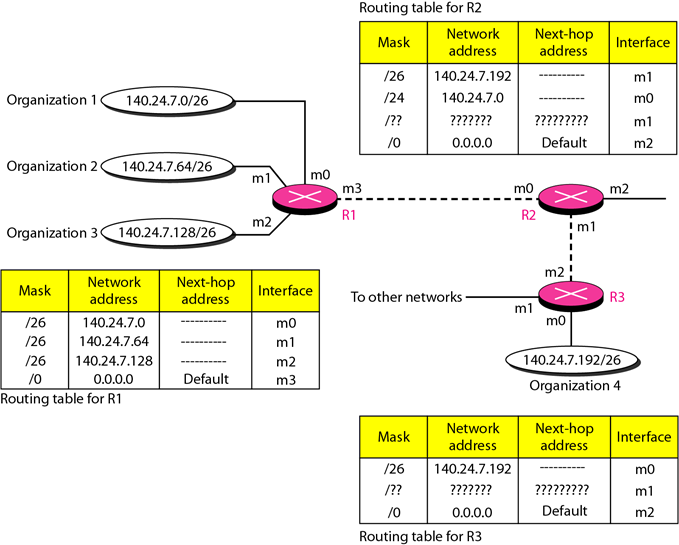
假如目标地址为 140.24.7.200 (属于组织 4) 的分组到达 R2, 会从 m1 转发出去 (第一条的掩码最长且成功匹配)
之后经过 R3 到达组织 4
至于之后的 RIP, OSPF, BGP 等请自行看书, 提纲上都是加粗的…
单播路由协议：路由协议的分类及典型的路由协议(RIP、OSPF、BGP)，AS 的概念、RIP 协议和 OSPF 协议、Dijkstra、Bellmanford 算法计算路由表及最小生成树
多播的概念和多播路由协议（了解）
Part 5 传输层
Chapter 23 UDP、TCP 和 SCTP
端口 [IMP]
- 一个端口号确定了主机上的一个进程
- 划分
- 1~1023: 熟知端口
- 1024~49151: 注册端口, IANA 不分配不控制, 但可以注册来防止重复
- 49152~65535: 动态端口, 可以有任何进程使用, 不需注册
- 套接字地址: 由 IP 地址和端口号组成, 唯一确定了一台主机上的一个进程
UDP
UDP: User Datagram Protocol, 用户数据报协议
概念
- 无连接 不可靠 传输层协议
- 有限的差错检验
UDP 的熟知端口 [IMP]
可以看书 p468
数据报结构
- 头部固定 8 字节
- 源端口号: 如果是源主机是客户机, 则大概率是临时端口号; 服务器则大概率是熟知端口号
- 目的端口号: 类似上面, 不过反过来
- 总长度: 头部 (8 字节) + 数据长度
- 校验和
- 注意在真正的 UDP 头部中, 没有源地址和目的地址 (这是 IP 头部的东西), 但是校验和会用到它们
校验和 [IMP]
- 实际上是伪头部与头部共同的校验和
- 伪头部: 类似 IP 头部的最后 12 字节, 见上图
- 数据部分通过填充 0 补齐到 16 位的整数倍, 但在发送时会被移除, 不进行填充
- 在计算完校验和后, 伪头部和填充就被移除, 它们不会交给 IP
- 计算方法和之前一样, 16 位分组, 求和, 循环进位, 最后取反码
- 校验和是可选的, 若不计算则可在这个字段填充全 1 (因为真正的校验和不可能为全 1, 这说明和为 0)
TCP [IMP]
TCP: Transmission Control Protocol, 连接控制协议
概念与特点
- 有连接 可靠 传输层协议
- 有流量控制和差错控制
- 服务:
- 提供进程到进程的通信
- 提供流传递服务, 类似于一个假想的管道, 存在缓冲区
- 全双工通信
- 面向连接
- 使用序列号 seq, 值为该段包含的第一个(数据)字节的序号
- 使用确认号 ack, 值为接收方预期接受的下一个字节的序号
段格式
TCP 中的分组被称为"段"
- 源端口地址, 目的端口地址: 和 UDP 中的一样
- 序列号 seq: 段中数据的第一个字节的序号, 连接建立时双方各自通过随机数产生初始序列号 (ISN)
- 确认号 ack: 段的接收方期望接受的下一个字节号
- 头部长度: 单位为4字节, 也就是说该字段的值为头部长度除以 4
- 保留: 就是保留
- 六个控制位
- URG: 紧急指针有效, 见后面
- ACK: 该帧包含确认
- PSH: 请求急迫/发送数据
(其实没啥用) - RST: 连接复位
(GFW经常就靠这个阻断你的连接) - SYN: 同步序列号
- FIN: 终止连接
- 窗口: 定义了接收窗口 (rwnd, Receiver Window) 的大小, 见阻塞控制
- 校验和: 计算方法一样, 也有伪头部, 伪头部 + 头部 + 数据, 但是书上没说 TCP 的伪头部是啥
- 紧急指针: 指向紧急字节的最后一个字节, 紧急字节总是位于段的开始, 收到后会被直接送往进程, 无需等待
连接的建立
- 采用三次握手
- 客户端: SYN (仅包含己方 seq, SYN 段不携带数据, 但占用序列号)
- 服务器: SYN + ACK (包含服务器的 seq 和 ack, 和单纯的 SYN 一样占用序列号)
- 客户端: ACK (若 ACK 段不携带数据, 则不占用序列号)
- 存在 SYN 洪泛攻击的问题
- 攻击方伪造大量的 SYN, 伪装成正常的连接请求
- 由于服务器需要为每一个请求分配资源, 因此很快被耗尽
- 最终服务器无法接受新的正常用户的请求 -> 拒绝服务攻击 (DoS, Denial of Service)
DDoS, Distributed Denial of Service, 就是分布式拒绝服务攻击
连接终止
三次挥手
- 主动方: FIN, 可携带数据, 占用一个序列号
- 被动方: FIN+ACK, 可携带数据, 占用一个序列号
- 主动方: ACK, 不占用序列号
四次挥手
- 主动方: FIN
- 被动方: FIN+ACK
- 此时进入半关闭
- 主动方不能够再发送数据, 但可以接收数据
- 被动方还能够继续发送数据
- 被动方: FIN
- 主动方: ACK
差错控制
校验和
在头部, 校验内容包括伪头部 + 头部 + 数据
确认
就是对占用序列号的段回送 ACK -> ACK 本身不占用序列号, 所以不需要确认
重传
- 出现损坏, 丢失或延迟时重传段
- 在实现中, 分为重传计时器到时和连续收到 3 个 ACK
- 重传计时器到时:
- 已发送未确认的(占用序列号的)段有一个定时器
- 称为 RTO 计时器 (Retransmission Time-Out)
- 其值根据往返时间动态更新
- 对 ACK 段不设置定时器
- 定时器到时时重发最早的重要的段
- 已发送未确认的(占用序列号的)段有一个定时器
- 连续收到三个 ACK:
- 触发快速重传
- 立即发送缺少的段
- 失序的段
- 暂时保留, 直到缺少的那个段到达
- TCP 保证提交给进程的数据是顺序正确的
重传计时器超时重传
快速重传, 重传时 seq 301~400 的计时器还没到时, 但依然重传
TCP 拥塞控制
- 在这里确定 cwnd 大小 (Congestion Window, 拥塞窗口)
- 采用三个阶段: 慢速启动, 拥塞避免, 拥塞检测
- 慢速启动: 指数增长
- 开始时 cwnd = 1 MSS (最大段长度, 在连接建立时确定, 相当于这时窗口大小为一个段)
- 每一个段的确认都会使 cwnd+1, 按照指数规律增长
- 到达阈值时, 结束慢速启动阶段
- 拥塞避免: 加性增加
- 每次窗口中所有段均被确认后才有 cwnd+1
- 直到检测到拥塞
- 拥塞检测: 乘性减少
- 若重传计时器到时, 说明拥塞可能很严重: 段丢失且一直没收到相关信息
- 强烈反应
- 阈值设置为 cwnd 的一半
- cwnd = 1 MSS
- 开始慢速启动阶段
- 相当于阈值变为实际上限的一半, 然后重启传输 (速度方面)
- 强烈反应
- 若接收到三个 ACK, 说明可能有轻度拥塞, 一些段可能已经成功到达, 仅有部分缺失
- 轻度反应
- 阈值设置为 cwnd 的一半
- cwnd = 阈值 (部分实现是 阈值+3)
- 开始拥塞避免阶段 (就是加性增加)
- 轻度反应
- 若重传计时器到时, 说明拥塞可能很严重: 段丢失且一直没收到相关信息
SS: 慢速启动 (指数增长)
AI: 加性增加
MD: 乘性减少
Threshold: 阈值
TCP 流量控制 [IMP]
- 采用滑动窗口, 面向字节, 又称信贷滑窗协议
- 窗口大小为头部中的接收窗口 (rwnd) 与 cwnd 较小值
- rwnd 表明了接收方当前可用的窗口大小
- 在窗口中, 左侧为已发送但未确认的, 右侧为可立刻发送的
- 在窗口外, 左侧为已发送且已确认的, 右侧为未发送且尚不可发送的
- 发送方接收到 ACK 后, 可以合拢窗口: 左侧向右移动
- 当 rwnd 或 cwnd 更新时, 可以张开窗口: 右侧向右移动, 但不建议收缩 (右侧向左移动)
- 窗口左边沿不能向左移动
Chapter 24 拥塞控制和服务质量
吞吐量和延迟 [IMP]
- 通常是衡量网络性能的因素
- 吞吐量:
- 单位时间内通过网络的分组数量
- 载荷小于网络容量时, 吞吐量随载荷增加成比例增长
- 载荷达到网络容量时, 吞吐量会急剧下降 (一些分组被丢弃导致重传)
- 延迟: 当载荷远小于网络容量时，延迟最小
- 最小延迟是由传播延迟和处理延迟所组成的，且都可以忽略不计
- 载荷达到网络容量时, 延迟急剧增加 (分组需要排队)
拥塞控制 [IMP]
开环拥塞控制
- 重传 (例如 TCP)
- 窗口 (比如选择性重复 ARQ)
- 确认 (ACK, 使用一个 ACK 确认多个分组与停止-等待 ARQ)
- 丢弃 (按照优先级)
- 许可 (虚电路建立连接时检查是否有拥塞, 有则拒绝建立连接)
闭环拥塞控制
- 背压: 从目的端方向的节点逐个拒绝接受上行节点的数据, 直到源端
- 抑制分组: 从发生拥塞的节点发送警告信息到源端
- 隐含信令: 进行推测, 例如过长时间没有收到确认
- 显示信令: 把信号包含在携带数据的分组中, 分前向信令 (向发生拥塞的方向), 后向信令 (原理发生拥塞的方向)
Part 6 应用层
Chapter 25 域名系统
DNS: Domain Name System
域名空间 [IMP]
- 使用倒置的树定义
- 最多 128 级, 根节点为 0 级
- 每个节点都有一个标号 (最长 63 的字符串), 根节点标号为空
- 每一个节点的子节点标号不能相同 -> 保证了域名的唯一性
- 域名由从子节点向根节点方向上的标号组成, 由点分割
- 全称域名 (FQDN)
- Full Qualified Domain Name
- 包含每一个节点
- 以点结尾, 因为最后的根节点标号为空
- 部分域名
- Partially Qualified Domain Name
- 起始于子节点, 但没有到达根节点
- 所以不以点结尾
客户端服务器模式的域名解析 [IMP]
- 客户端通过请求最近的 DNS 服务器
- 正向查询: 域名到地址
- 反向查询: 地址到域名, 也叫 PTR 查询 (指针查询)
- 若要查询 A.B.C.D 的域名, 发送
D.C.B.A.in-addr.arpa. - 注意反向和最后的点
- 若要查询 A.B.C.D 的域名, 发送
- 分为递归解析和迭代解析
- 递归解析: 客户机期望本地服务器直接提供最终结果
- 如果该服务器是这个域名的授权服务器, 则直接响应
- 否则把请求转发给另一个服务器 (通常是父服务器)
- 如果父服务器是授权服务器, 则父服务器 -> 本地服务器 -> 客户端
- 否则继续递归, 直到找到结果
- 迭代解析: 客户机自己一个一个询问找到结果
- 如果该服务器是这个域名的授权服务器, 则直接响应
- 否则该服务器返回一个它认为可能知道的服务器的地址, 由客户机自己去继续查询
- 递归解析: 客户机期望本地服务器直接提供最终结果
- DNS 服务器采用缓存技术, 存储最近的查询与结果
- 通过在查询条目中添加 TTL (生存时间) 来保证结果不过时
DNS 报文
- 查询和请求报文头部相同
- 看书 p534
Chapter 26 远程登录、电子邮件和文件传输
TELNET
TELNET: Terminal NETwork, 终端网络
- 建立到远程计算机的连接 (类似命令行版本的远程桌面)
- 是客户端/服务器架构
电子邮件
构架
- UA: 用户代理程序, 负责生成邮件 (类似邮件客户端, 人用的那个)
- MTA: 报文传输代理, 负责转发与保存, 客户端只能推入报文 (push)
- MAA: 报文访问代理, 负责提供收到的报文, 客户端只能取出报文 (pull)
- 发送方为 A, 接收方为 B:
- 同一系统: A -> UA -> 系统 -> UA -> B
- 不同系统: A -> UA -> MTA客户端(在邮件服务器上) -> 因特网 -> MTA服务器(在另一台邮件服务器上) -> UA -> B
- 一方未直接连接到邮件服务器: 先通过广域网/局域网把邮件报文发到服务器
- 双方均为👆: A->UA->MTA客户端(在A的计算机上)->MTA客户端(在邮件服务器上)->因特网->MTA服务器(在另一台邮件服务器上)->MAA服务器(同前)->MAA客户端(在B计算机上)->UA->B
MIME [IMP]
MIME: Multipurpose Internet Mail Extension, 多用途因特网邮件扩展
- 将非 ASCII 数据转换成 NVT ASCII 数据
SMTP [IMP]
SMTP: Simple Mail Transfer Protocol, 简单邮件传输协议
- 是报文传输代理 (MTA) 协议
- 定义了一组交换邮件的命令
POP3 和 IMAP4 [IMP]
POP: Post Office Protocol ver 3, 邮局协议版本 3
IMAP: Internet Mail Access Protocol ver 4, 因特网邮件访问协议版本 4
- 都是报文访问代理 (MAA) 协议, 提供用户和邮件服务器间的报文阅读
- POP3:
- 功能简单, 不支持预览
- 支持删除模式和保存模式
- 删除: 邮件从邮箱读取后即被删除
- 保存: 读后不删除
- IMAP4:
- 可以在下载前读取头部或内容中的特定字符串
- 可以部分下载邮件内容
文件传输
FTP [IMP]
- 客户机/服务器模式
- 控制端口 21, 数据端口 20
- 前者在整个会话期间持续连接, 后者仅在文件传输时连接
- 需要登陆, 但服务器可以允许匿名帐户 (谁都能用)
- 可以传输文本和二进制文件
Chapter 27 万维网与超文本传输协议
URL [IMP]
URL: Uniform Resource Locator, 统一资源定位符
- 格式:
协议 :// 主机 : 端口 / 路径- 例如
https://example.suffix:80/index
- 例如
- 端口可选, 协议最常用的是 HTTP
HTTP
HTTP: HyperText Transfer Protocol, 超文本传输协议
概念 [IMP]
- 在 80 端口上使用 TCP
- 同样用来存取信息, 类似 FTP 和 SMTP 的组合
报文结构 [IMP]

请求报文的结构
响应报文的结构
- 都是纯文本的
- 请求类型: GET, POST, HEAD, PUT, TRACE 等等
- 首部: 类似于选项, 指定了可接受的格式, 语言, 过期时间等
无关内容: 实际上有些人认为 HTTP 报文由于使用了纯文本, 不利于快速解析
不过纯文本倒是有个显著优点 - 人类可读 🐶
HTTP 操作
- HTTP 本身是无状态的, 状态需要依赖 cookie 保存
- 客户端发送请求报文来初始化HTTP事务
- 服务器发送响应报文进行回复
0620 🕊🕊🕊 计划: To Chapter 18, end of Part 3 - Datalink Layer
0620 Completed 🍻
0621 🕊🕊🕊 计划: To Chapter 20 - IP Protocol
0621 Finished Chapter 24, end of Part 5 - Network Layer 🍻
0622 🕊🕊🕊 计划: Finish’em ALL
0622 We made it.